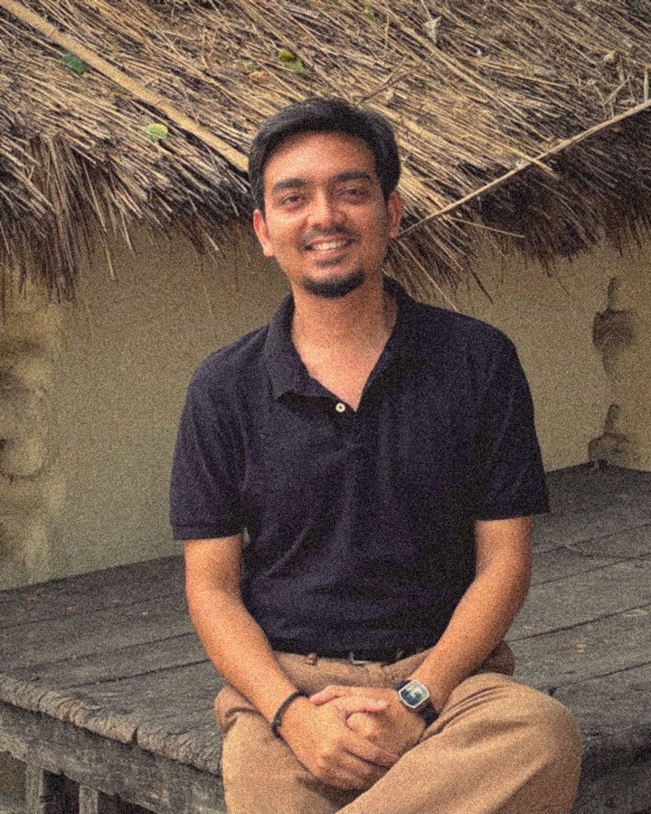

This resource centre on democracy was built by Sushant Kumar, a co founder of Dialogues on Democracy and Development.
Sushant is a first generation graduate from Muzaffarpur in Bihar. He studied political science at Banaras Hindu University, then went on to do a BEd from Maharshi Dayanand University and a Masters in Education from Azim Premji University. He is a facilitator who loves teaching, and most of his work happens in classrooms, training halls and community spaces where people argue, listen and think together.
He heads the communications team at Mantra4Change and produces a podcast called Up Close and Personal with GenNext. He writes and tells stories, and he was part of the ERA Cohort of 2026 at Cannes Lions. He is also the chief curator of Turtle Forum, where his two interests, democracy and storytelling, come together.
His interest in democracy is not academic. Growing up in small town Bihar, he saw early how much of a person's life is decided by caste, money and gender, and how often the promises written into the Constitution stop short of reaching the people who need them most. That is what pulled him towards constitutional values in the first place.
He believes the Constitution is not a book for lawyers alone. Justice, liberty, equality and fraternity are not distant ideas. They show up in who gets to speak in a meeting, who sits where in a classroom, who is believed and who is asked to wait. He thinks most people already hold these values in some form, and that good conversation is what brings them to the surface.
This resource centre grew out of that belief. The assessment, the games and the pages on the Constitution are all attempts to turn a heavy text into something you can play with, argue with and carry into everyday life.